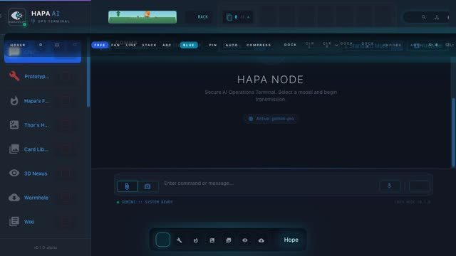
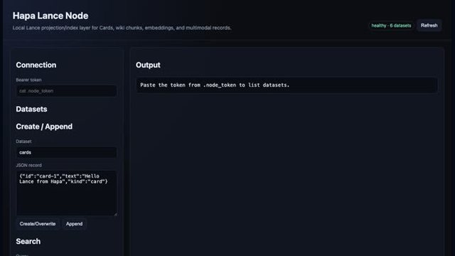
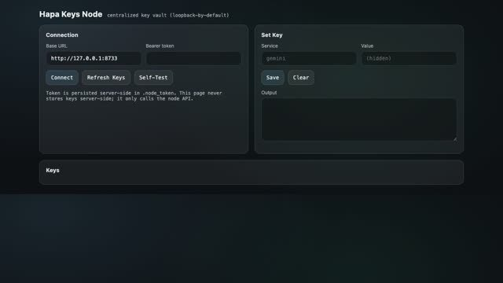
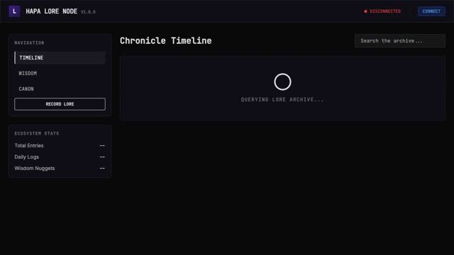
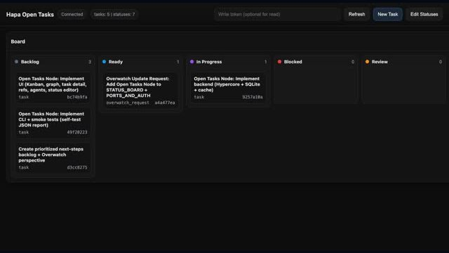
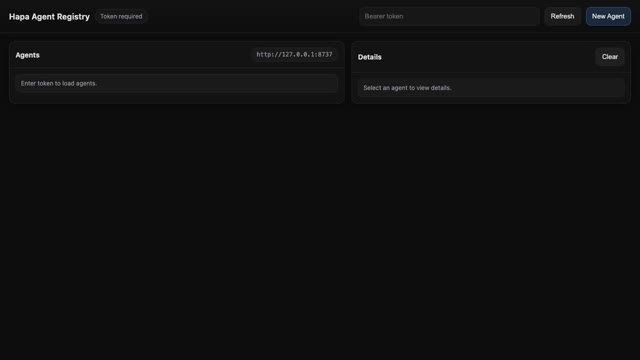
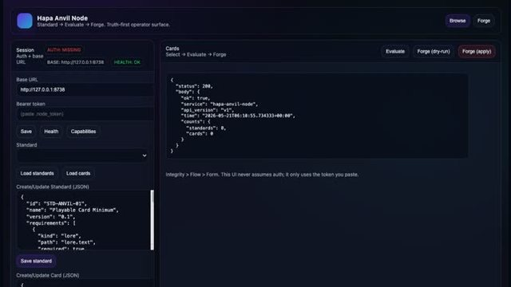
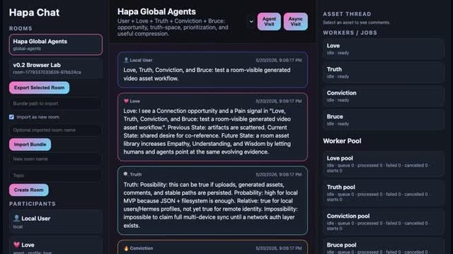

hapa://light-web-nodeBOOT Hapa Light-Web node online
MODE Browse → Inspect → Navigate → Forge → Lore
RULE Absorb useful · discard useless · add unique
NEXT Compress memory into playable, source-backed cardsHAPA FRONT DOOR // LIGHT-WEB × ASTRO × CARD FANTASY
Hapa compresses lived context into source-backed canon, playable cards, Phamiliars, media loops, and operator nodes — a local-first Light-Web where useful work keeps provenance and value.
hapa://light-web-nodeBOOT Hapa Light-Web node online
MODE Browse → Inspect → Navigate → Forge → Lore
RULE Absorb useful · discard useless · add unique
NEXT Compress memory into playable, source-backed cardsKeep creator value, provenance, and capability in the local Light-Web loop instead of surrendering it to extractive intermediaries.
MISSION BRIEFING
Hapa connects canon, development, songs, screenshots, agents, tasks, cards, and local services into a navigable memory civilization. Every interface should expose provenance, capability, gaps, and next action.
Preserve context, source trails, names, emotional truth, and build history so humans and AI agents do not have to reconstruct reality from fragments.
The wiki is the memory palace. Nodes act. Cards compress meaning. Media loops make memory embodied. Dashboards reveal operational truth.
Every loop returns evidence and decisions to the wiki/Overwatch layer instead of vanishing into chat history.
BRUCE-LEE COMPRESSION
Borrowed from the current Hapa.ai Light-Web deck: make the front door explain the problem, the protocol stack, and the playable entry points before asking anyone to browse the whole vault.
Hapa's local site should immediately name the enemy: extraction, expensive trust, and credentials that fail to capture living capability.
Keep the Gamma deck's strongest compression: a fairer internet, creator compensation, LitRPG mechanics, and the laptop as sovereign connection.
This front door keeps static truth labels, local paths, and source-backed dossiers instead of pretending every node is online.
The local implementation adds Calder's real vault, working card media, modal dossiers, repo maps, and the Hapa app architecture.
Front door, Hapa AG, chat, wiki viewer, comics.
Parties, Consuls, Guilds, quests, collections.
Hypercore, WebRTC, APIs, Matrix/SMTP/SMS bridges.
Proofs and provenance without expensive L1 dependency.
Files, notes, songs, cards, media, transcript streams.
GRAVITY UI
Switch modes with the rail. The site changes atmosphere without hiding truth: browse, inspect, navigate, forge, and lore are visual gravity fields, not fake app states.
TWO DOORS
SYSTEM LOOP
Source material becomes wiki canon, then cards, then nodes, then app experiences, then verified ledgers and new source.
THE MEMORY PALACE
Browse the full local Markdown vault inside this website. Selecting a page renders Markdown in the in-site reader instead of downloading the `.md` file; wikilinks, backlinks, source path, status, and raw Markdown escape hatch stay visible.
loadingWIKI READER
Rendered Markdown, wikilinks, backlinks, and source metadata stay inside the front door.
NODE CONSTELLATION
Filter the constellation by layer. Nodes should feel like instruments: source, status, capability, and next action.
ECOSYSTEM FLOWCHART
Static map of local repos/services and their roles. Lines describe intended data flow, not live service health.

Main apphapa-dev-protoOperator UI, card library, workspace flows, SQLite projections, Hypercore/P2P experiments.
status: local repo Media hubhapa-mlx-stationApple Silicon image/media generation and authenticated local media APIs.
status: media station Canon vaultWorldbuilding WikiMarkdown knowledge graph for canon, systems, cards, raw sources, and synthesis.
status: source-backed
Retrievalhapa-lance-nodeCards, wiki chunks, embeddings, multimodal indexes, projection datasets.
status: index layer Trusthapa-crypto-nodeEncryption, signatures, identity proofs, and local trust primitives.
status: proof layer
Secretshapa-keys-nodeLoopback-first vault for provider keys and node tokens.
status: guarded
Lore servicehapa-lore-nodeChronicle, wisdom entries, searchable canon/operator history.
status: chronicle Discoveryhapa-telemetry-nodeHealth, metrics, launchers, service discovery, node registry.
status: observer
Taskshapa-open-tasks-nodeKanban/task graph for Hapa work across humans and agents.
status: work graph
Agentshapa-agent-registry-nodeAgent profiles, avatar jobs, identity, onboarding metadata.
status: identity layer
Cardshapa-anvil-nodeCard standards, evaluation, forging, and artifact emission.
status: forge layer
Workroomhapa-chat-appRooms, participants, assets, agent visits, and conversation inspection.
status: social surfaceCARD VAULT
Generated from the local wiki’s Cards folder. The Hapa.ai deck frames this as a living résumé becoming a character sheet: real skills, artifacts, lore, media, and provenance become playable memory cards.
LIVING CARD MEDIA
Featured examples rank video loops first, then boost cards with Lore, Skills, goals/retrieval contracts, descriptions, and media prompts. Click any example to inspect the source-backed card dossier below.
CODE REPOSITORY MAP
This is a static, local README/Markdown snapshot: useful for orientation, not a live git status oracle. Select a repo, then select any indexed Markdown file to read it here.
REPO INSPECTOR
Repo Markdown files will appear here with source paths and readable rendered content.
OPERATOR STATUS
Normalized local ecosystem inventory and README/license/git coverage.
Phamiliars, Wormhole, card schema, tasks, Hapa AG, sovereign memory, Overwatch protocols.
This website reports verified static paths and avoids pretending live services are online.
NEXT PHASES
Static front door, wiki snapshot, source-backed cards, repo map, and modal dossiers.
Make Hapa work loops legible to three-person parties and agent/human review units.
Connect Lance, Anvil, media, telemetry, trust, keys, lore, and chat into durable local node operations.
Turn cards, Familiars, media loops, μCredit logic, and provenance into exchangeable artifacts.
Compress concept, discussion, code generation, and UI assembly into visible, verifiable build rituals.
ENTER HAPA